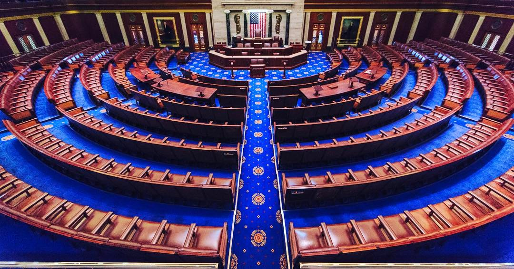

United States · 119th Congress
The House.
What the House voted on, who voted yes, who voted no, and how to reach the member.

Yes. A darker green is a larger yes share.
No. A darker rose is a larger no share.
Floor list. Scheduled, with no roll call that week.
Present
Did not vote
Each roll call
Who introduced it, and how each member voted.
A phone, an office, and a website are listed for the member.
While the page is open
A roll call published later is added while the page is open.
The floor list is the latest week the House has published. A senator is listed with a phone, an office, and a website.
leaders.vote/house
Independent voter guide. Not a government site.